JAPANESE CANDLESTICK CHARTING TECHNIQUE
Last updated on: April 21, 2024
The term "candlesticks" also called "candles" is a Japanese chart
analysis technique that has been refined by generations of use in
the Far East. Until 1991, the technique remained secret from the
Western world for over a century because no document ever mentioned
about it. But, now it is known and accepted worldwide. Some of the
features of this technique are:
- Easy to understand
- Provide earlier indications of the market turns and reversal
signals
- Furnish unique market insights by showing the underpinning
move
- Enjoyable to learn
- Applicable to any market be it Eastern or Western and enhances
analysis
- Increases the effeciency of analysis by sending visual
information
- Based on psychology of market - considers sentiments of
traders
Traditional Bar charts vs Candle charts
|
The image on the right side shows a table at the top
which shows open, close, high and low values for 5
periods. The Bar chart and the Candle chart for this
data are shown below this table.
The bar chart for a period has a vertical line which
shows the high and the low values for the day. The
horizontal line on the left-side of the vertical line
shows the open and the horizontal line on the right of
the vertical line shows the close.
The explanation for candlesticks is present in the
following section.
|
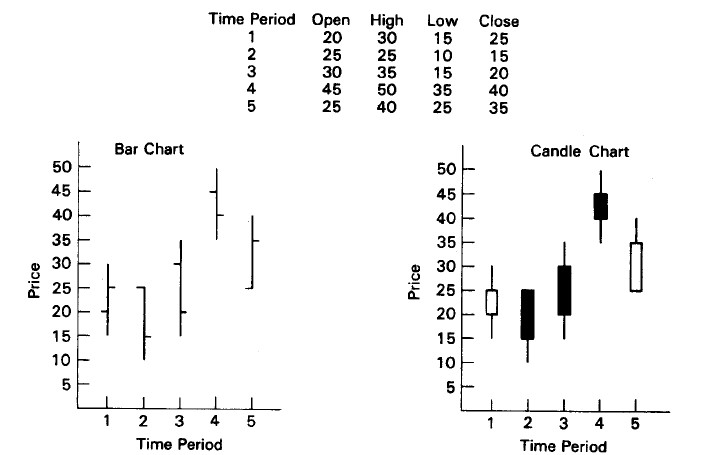
|
The basics of candlesticks
Candle - A candle has a real body which is the rectangular
section and thin lines above and below the real body called shadows.
The top and the bottom sections of the rectangular body represent
the open and the close values and the tips of shadows represent
the high and the low values. Because of their shape these are
called candles. Candles can be drawn using any time frame- from
intraday to daily to weekly charts and so on. Multiple variants
of candle are shown below:
|
The white candle - when the close value is greater than
the open value then this is depicted as a white candle.
This is also called bulls.
|
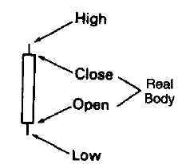
White candle
|
The black candle - when the open value is greater than
the close value then this is depicted as a black candle.
This is also called bears.
|

Black candle
|
Shaven head- If a candle has no upper shadow, it is said
to have shaven head.
Shaven bottom- A candle with no lower shadow has a shaven
bottom.
Spinning top- The japanese term for a small real body
(black or white) is a spinning top.
|
Doji- When there are no real body i.e. when the
open and close values are really close then the candles
representing these are called doji. The plural of doji is
doji.Doji have implications as a reversal signal.
|
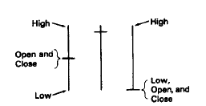
Doji
|
Trend reversal
|
Trend reversal means that the prior trend is about to
end. This is shown in the figure on the right side of
this section. The indicators have indicated that the upward
movement is about to end. And now one of the three situation
may happen:
-
The price will continue to move up a bit and then it
will move down.
-
The price will move down and after reaching a point, it
will rise again.
-
The price will fall and continue to fall.
Trend reversal is just a caution indicator. The market's
psychology is in transformation. The same is applicable for downtrend as well.
|
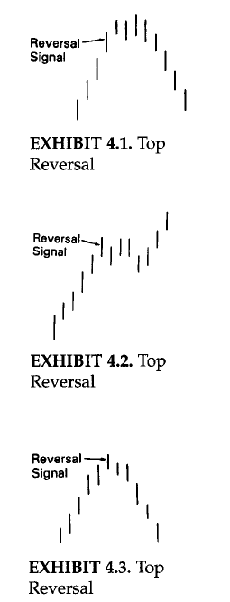
Trend reversal
|
UMBRELLA LINES
-
Candles with long lower shadows and small real bodies
(black or white) near the top of the range. These are
called umbrella lines because they look like umbrellas.
-
These umbrella lines can be either bullish or bearish
according to the market environment. The character of
umbrella lines changes based on the prevailing trend before
the umbrella lines.
-
If an umbrella line emerges during a downtrend, it is
a signal that the downtrend should end. In such a scenario,
this umbrella line is labeled a hammer, as in "the
market is hammering out" a base.
-
The actual Japanese word for the hammer is takuri.
The hammer line looks like a hammer with its head and handle.
The hammer's long lower shadow and the close at, or near, the
high of the session graphically relays that the market sold off
sharply during the session and then bounced back to close at, or
near, the session's high. this could have bullish ramifications.
This aspect of closing at or near highs is why the hammer should
have no, or a miniscule, upper shodow. If there was a long upper
shadow, this would mean the market closed well off its highs,
which is an important criterion for the hammer. A lower shadow
is necessary because it would display that the market had been
pushed downsharply lower during the session, but by the end
of the session, there was a "kamikaze fight" as the bears lost
controls is depicted by the fact that the market closed at, or near,
its session highs.
-
One interesting aspect, a very long shadow hammer means that by the time the hammer is confirmed (we need to wait for a close to confirm
the hammer), the market could be well off its lows. Buying at the close of such a hammer may not present an attractive risk/reward since
the market may retrace back to the lows of the hammer before, potentially, resuming an upward course. A high-volume hammer decreases the
chance for a correction to the hammer's low. Therefore, one may be more aggressive about buying on the hammer's close if it is a usually
high-volume hammer than one would if the volume didn't give the same forceful confirmation.
-
If either of lines emerges after a rally, it is a potential
top reversal signal called a hanging man. The name
"hanging man" is derived from the fact that it looks like a
hanging man with dangling legs. It has the same shape as the
hammer. The only difference is that a hanging man comes after
an advance. A close beneath the hanging man is preffered.
It is advisable to wait for bearish confirmation after
a hanging man.
-
The colour of the the real body does not make any difference.
The hammer and hanging man can be recognized by three
criteria:
-
The real body is at the upper end of the trading range.
The colour of the real body is not important.
-
It has a long lower shadow that should be at least twice
the height of the real body.
-
It should have no, or a very short, upper shadow.
There are three aspects that differentiate the hanging man
from hammer- trend, extent of the move before the candle line,
and the confirmation.
-
Trend: A hammer must come after a decline. A hanging man
must come after a rally.
-
Extent of the move before the candle line: A hammer is valid
even if it comes after a short-term decline, but a hanging man should
emerge after an extended rally, preferably at an all-time high.
-
Confirmation: A hanging man should be confirmed, while a
hammer need not be.
The longer the lower shadow, the shorter the upper shadow; the
smaller the real body, the more meaningful the bullish hammer or
bearish hanging man.
|
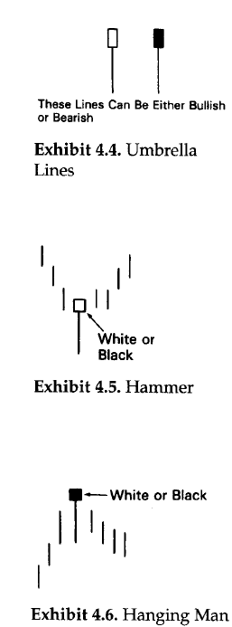
Umbrella Lines
|
THE ENGULFING PATTERN
-
Most candle signals are based on combinations of
individual candle lines. The engulfing pattern is
the first of these multiple candle line patterns.
-
The engulfing pattern is a major reversal signal
with two opposite colour real bodies composing a
pattern.
-
Another name for the engulfing pattern is a "hugging
line".
-
The figure shown on the right (above) of this section
shows a bullish englufing pattern. The market
is falling. And then a white bullish real body wraps
around, or engulfs, the prior period's black real body.
This shows buying pressure has over-whelmed selling
pressure.
-
The figure shown on the right (below) of this section
shows a bearish engulfing pattern. Here the
market is trending higher. A white real body engulfed
by a black real body is the signal for a top reversal.
This also shows that supply has overwhelmed demand.
-
The significance of the bearish engulfing pattern will increase if there is a lighter volume on the first candle (the white) and a
heavier volume on the second candle (the black).
There are three criteria for an engulfing pattern:
-
The market has to be in a clearly definable uptrend
(for a bearish engulfing pattern) or downtrend (for
a bullish englufing pattern), even if the trend is
short term.
-
Two candles comprise the engulfing pattern. The second
real body must engulf the prior real body (it need not
engluf the shadows).
-
The second real body of the engulfing pattern should be
the opposite colour of the first real body. The exception
to this rule is if the first real body of the engulfing
pattern is a doji. Thus, after an extended fall, a doji
engulfed by a very large white real body could be a bottom
reversal. In an uptrend, a doji enveloped by a very large
black real body could be a bearish reversal pattern.
Some factors increasing the likelihood that an engulfing
pattern could be an important turning signal are:
-
If the first day of the engulfing pattern has a very small
real body (i.e., a spinning top) and the second day has a
very long real body. The small first real body candle
reflects a dissipation of the prior trend's force and the
large second real body proves an increase in the force
behind the new move.
-
If the engulfing pattern appears after a protracted or very
fast move. A fast or extended move creates an overextended
market (either overbought or oversold) and makes it vulnerable
to profit taking.
-
If there is heavy volume on the second real body of the
engulfing pattern.
|

Engulfing Pattern
|
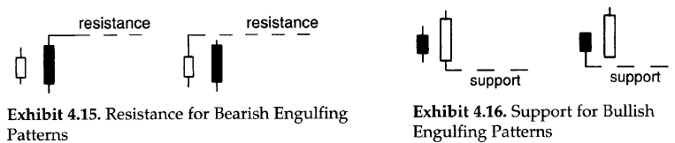
Resistance or Support for Engulfing Patterns
-
A prime use of the engulfing pattern is utilizing them as support
or resistance. Provided we need to wait for the close.
-
On the right hand side of the figure shown above, the high of the
two candle lines that make the bearish engulfing pattern. That high
becomes our resistance (based on a close).
-
This technique of the bearish engulfing pattern as resistance is
especially useful if the market has moved too far from the highs
to be comfortable selling.
-
On the left hand side of the figure shown above, the same concept is
used for bullish engulfing pattern. The lowest low of this pattern
becomes support.
-
This technique of the bullish engulfing pattern as support is
especially useful if the market has moved too far from the lows
to be comfortable buying (consider correction as well).
DARK-CLOUD COVER
-
It is a reversal pattern. It is a dual-candle pattern
that is a top reversal after an uptrend or, at times,
at the top of a congestion band.
-
The first day of this two-candle pattern is a strong white
real body. The second day's price opens above the prior
session's high (that is, above the top of the upper shadow).
However, by the end of the second day's session, the market
closes deeply within the prior day's white body.
-
The greater the degree of penetration into the white body, the
more likely this is a top. Some Japanese technicians require
more than a 50-percent penetration of the black session's close
into the white real body.
-
If the black candles does not close below the halfway point
of the white candlestick, it may be best to wait for more
bearish confirmation following the dark-cloud cover.
-
In some cases it is considered as a
dark-cloud cover even if the open is over the prior session's
close instead of the prior session's high.
-
The rationale behind this bearish pattern is readily explained.
On the first session of the dark-cloud cover, the market is
ascending with a strong white candle. This is followed by a gap
higher on the next session's opening. Thus far, the bulls are in
complete control. But then the whole technical picture changes as,
on the second day of this pattern, the market closed not only
beneath the prior close, but well within the prior day's real body,
offsetting much of the gain of the first session. In such scenario,
the longs will have second thoughts about their position.
-
Those who were waiting for selling short now have a benchmark to
place a stop at the new high of the second day of the dark-cloud
cover pattern.
-
Just as a bearish engulfing pattern can be resistance, so too the
highest high of the two sessions that formed the dark-cloud
cover should be resistance.
|
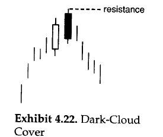
Dark Cloud Cover
|
Some factors intensifying the importance of the dark-cloud covers include:
-
The greater the penetration of the black real body's close into the
prior white real body, the greater the chance for a
top. If the black real body covers the prior day's entire white
body, it would be a bearish engulfing pattern rather than a dark-cloud
cover. A bearish engulfing pattern, consequently, can be a more
meaningful top reversal. If a long white real body closes above the highs
of the dark-cloud cover, or the bearish engulfing pattern it could
indicate another rally.
-
During a prolonged ascent, if there is a strong white day that opens
on its low (that is, a shaven bottom) and closes on its high (that is,
a shaven head) and the next day reveals a long black real body day,
opening on its high and closing on its low, then a shaven head and
shaven bottom black day has occurred.
-
If the second body (i.e., the black body) of the dark-cloud covers
opens above a major resistance level and then fails, it would prove
the bulls were unable to take control of the market.
-
If on the opening of the second day, there is very heavy volume,
then a buying blow off could have occurred. For example, heavy volume
at a new opening high could mean that many new buyers have decided to
jump abroad ship. Then the market sells off. For future traders,
very high opening interest can be another warning.
PIERCING PATTERN
-
The dark-cloud cover's counterpart is the bullish piercing
pattern. The piercing pattern is composed of two candles in
a falling market.The first candle is a black real body day
and the second is a white real body. This white candle opens
lower, ideally under the low of the prior black day. Then the
prices rebound to push well into the black candle's real body.
|
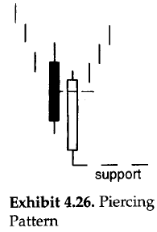
Piercing pattern
|
-
The piercing pattern is similar to the bullish engulfing pattern.
In the bullish engulfing pattern, the white real body engulfs the
entire previous black real body. For the piercing pattern, the
white real body pierces, but does not wrap around, the prior black
body.
-
In the piercing pattern, the greater the degree of penetration into
the black real body, the more likely it will become a bottom reversal.
An ideal piercing pattern will have a white real body that pushes more
than halfway into the prior session's black real body. The psychology
behind the piercing pattern is as follows:
-
The market is in a downtrend. The bearish black real body reinforces
this view.
-
The next session the market opens lower via a gap. The bears are watching the
market with happiness.
-
Then the market surges toward the close, managing not only to close unchanged
from the prior day's close, but sharply above that close. The bears will be
second-guessing their position.
-
Those who are looking to buy would say new lows could not hold and could view
it as an opportunity to buy.
-
The piercing pattern signal increases in importance based on the same factors
1 through 4 as with the dark-cloud cover, but in reverse.
-
With the dark-cover we would like to see the black real body closing more than
midway in the prior white candlestick. But there is some flexibility to this rule.
There is less flexibility with the piercing pattern. The piercing pattern's white
candlestick should push more than halfway into the black candlestick's real body.
-
The reason for less latitude with the bullish piercing pattern than with the bearish
dark-cloud cover pattern is the fact that the Japanese have three other patterns
called the on-neck, the in-neck, and the thrusting pattern.
-
All three have same basic formation as the piercing pattern. The difference among them
is in the degree of penetration by the white candle into the black candle's real body.
-
The on-neck pattern- The on-neck pattern's white candle (usually a small one)
closes near the low of the previous session.
-
The in-neck pattern- The in-neck pattern's white candle closes slightly into
the prior real body (it should also be a small white candle).
-
The thrusting pattern- The thrusting pattern should be a longer white candle that
is stronger than the in-neck pattern, but still does not close above the middle of the
prior black body.
-
The general concept that one should view a non-ideal candle pattern by:
-
How it was formed
-
Within the overall market picture
These two factors will help us gauge if the less-than-perfect pattern could have
the same implications as a more classicly defined candle pattern. It is the
subjectivity that makes computer recognition of candle patterns so difficult.
-
With the piercing pattern, we would like to see lighter volume on the black candle and heavier volume on the white candle.
This would serve to reinforce that the bears are loosing force and the bulls are gaining a strong foothold. This volume
scenario also increases the odds that the piercing pattern will hold.
|

More of piercing pattern
|
STARS
-
A star is a small real body (white or black) that
gaps away from the large real body preceeding it.
-
In other words, the star's real body can be within
the prior session's upper shadow. All that is needed
is that the real bodies don't operlap (there are some
exceptions to this rule, which are addressed later in
this section).
-
If the star is a doji instead of a small real body, it
is called doji star. The star, especially the doji star,
is a warning that the prior trend may be ending.
-
The star's small body represents a stalemate between the
bulls and bears. The bulls are obviously in charge in a
brisky ascending market.
-
With the emergance of a star in such an environment, it is
a signal of a shift from buyers being in control to a
deadlock between the buying and selling forces. This
deadlock may have occurred either because of a diminution
in the buying force or an increase in the selling pressure.
Either way, the star tells us the rally's prior power has
slightly dissipated. This means the market is vulnerable to
a setback.
|
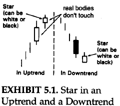
Star
|
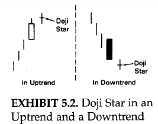
Doji star
|
|
|
|
-
The same is true, but in reverse, for a star in a downtrend
(sometimes a star during a downtrend is labeled a raindrop).
The long black candle during the downtrend visually reflects
that the bears are in command. A change is seen in the advent
of the star, which signals as environment in which the bulls
and the bears are more in equilibrium. In other words, the
downward energy has thus been cooled. This is not a favourable
scenario for a continuation of the bear market.
-
The star is part of four reversal patterns:
- The morning star
- The evening star
- The doji star
- The shooting star
THE MORNING STAR
-
The morning star is a bottom reversal pattern. Its
name is derived because, like the morning star (the
nickname for the planet Mercury) that foretells the
sunrise, it indicates higher prices. There are three
candle lines comprising this pattern:
-
Candle 1: An extended black real body. This pictorially
proves that the bears are in command.
-
Candle 2: A small real body that doesn't touch the prior
real body (these two lines comprise a basic star pattern).
The small real body means sellers are losing the capacity
to drive the market lower.
-
Candle 3: The concluding candle of the morning star is a white
real body that intrudes deeply into the first session's black
candle. This is the indication that the bulls have seized control.
-
The lowest low of the three lines that form this pattern
should be support as hown by the dashed line.
-
An ideal morning star would have a gap between the second
and the third bodies. Although, a lack of gap does not seem
to weaken the power of this formation. The decisive factor
is that the second candle should be a spinning top and the
third candle pushes well into the black candle.
-
A limitation with the morning star is that since this is a three-candle
pattern, one has to wait until the close of the third session to
complete the pattern. As is usually the case, if this third candle is
a tall white one, we would get the signal well after the market already
had a sharp bounce. In other words, the completion of the morning star
may not present an attractive risk.reward trading opportunity. An option
is waiting for a correction to the morning star's support area to start
cautiously from the long side.
|
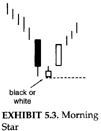
Morning Star
|
THE EVENING STAR
-
The evening star is the bearish counterpart of the morning star
pattern. It is named so because the evening star (the nickname
for the planet Venus) appears just before darkness sets in. Since
the evening star is a top reversal, it should be acted upon if it
arises after an uptrend.
-
Three lines compose the evening star:
-
The first is a long white body.
-
The next is a star. The star is the first hint of a top.
-
The third line corroborates a top and completes the three-line
pattern of the evening star.The third line is a black body that
closes sharply into the first period's white real body.
-
Evening star pattern is analogous to a traffic light. The traffic
light goes from green (the bullish white body) to yellow (the star's
warning signal) to red (the black real body confirming the prior trend
has stopped).
-
An evening star should have a gap between the first and the second real bodies
and then another gap between the second and the third real bodies. But, this
second gap is rarely seen and is not necessary for the success of this pattern.
The main concern should be the extent of the intrusion of the third day's black
real body into the first day's white body.
-
Some factors increasing the likelihood that an evening or morning star could be
a reversal would include:
-
If there is no overlap among the first, second, and the third real bodies.
-
If the third candle closes deeply into the first candle's real body.
-
If there is light volume on the first candle session and heavy volume on
the third candle session. This would show a reduction of the force for
the prior trend and an increase in the direction force of the new trend.
-
The highs of the evening star become resistance as displayed by the dashed line.
|

Evening Star
|
THE MORNING AND EVENING DOJI STARS
-
The evening doji star is a distinctive form of the regular evening star.
It has a doji instead of a small real body as the second candle.
-
If there is an evening doji star in which the bottom shadow of the doji session
does not overlap with the shadows of the first or third candles (that is, the
shadows do not touch), it is considered a top reversal signal known as an
abandoned baby top. Thus pattern is very rare.
|
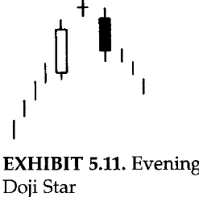
Evening Doji Star
|
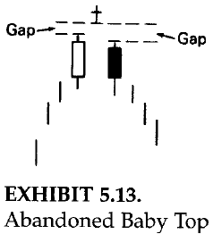
Abandoned Baby Top
|
-
The morning doji star has a doji as star portion. This type of morning star
can be a menaingful bottom.
-
If there is a doji that has a gap before and after it (where the shadows do not
touch), it should be a bottom. This pattern is referred to as an abandoned baby
bottom. It is also extremly rare.
|
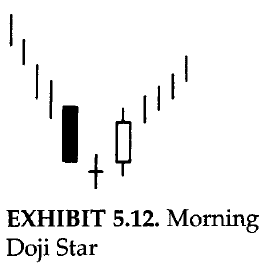
Morning Doji Star
|
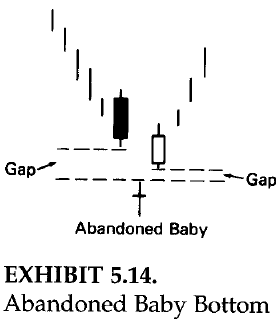
Abandoned Baby Bottom
|
THE SHOOTING STAR AND THE INVERTED HAMMER
-
The shooting star- has a small real body at the lower end of
its range with a long upper shadow. We can see how this line's name
is derived. It looks like a shooting star with its long tail blazing
across the sky. The Japanese say that the shooting star shows trouble
overhead.
-
Since it is one session, it is usually not a major reversal signal as
is the bearish engulfing pattern or evening star. The shooting star
does not shows resistance unlike the bearish engulfing pattern or evening
star.
-
The shooting star is a bearish reversal signal, it must come after a rally.
An ideal shooting star has a real body that gaps away from the prior real
body. Nonetheless, as will be seen in several chart examples, this gap is not
always necessary. A lack of rising gap is more of a reason to be negative on
the shooting star. The trend could be turning less bullish if the shooting
star has no gap.
-
When we get signal after signal at the same price level, it reinforces that
resistance are. The occurrence of multiple shooting stars increases the
likelihood that this would be a reversal.
-
If a shooting star-shaped candle line comes after a downturn, it could be a bullish
signal. Such a line is called an inverted hammer. Although the inverted hammer has
the same form as a shooting star, it is not a star pattern.
|
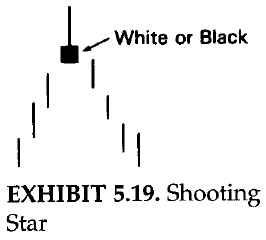
Shooting Star
|
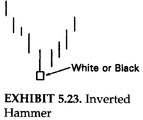
Inverted Hammer
|
-
Inverted hammer has the same form as a shooring star with its long upper shadow and
small real body at the lower end of the range. The only difference between the shooting
star and inverted hammer is that the inverted comes after a decline. As, a result while
the shooting star is a top reversal line, the inverted hammer is a bottom reversal line.
The colour of the inverted hammer's real body doesn't matter. This concept is similar to
the hammer and the hanging man concept in which the same shape line is bullish or bearish
depending on the preceeding trend.
-
Just as a hanging man needs bearish confirmation, the inverted hammer needs bullish confirmation.
This confirmation could be in the form of the next day opening above the inverted hammer's real
body or especially a close the next day over the inverted hammer's real body. The reason for
the required bullish verification of the inverted hammer is because its long upper shadow gives
the inverted hammer a bearish hue. To be aware of the inverted hammer session, the market opens on,
or near, its low and then rallies. The bulls fail to sustain the rally and prices close at, or near,
the lows of the session. If the next day opens, and especially closes, over the inverted hammer's real
body, the more likely these shorts will cover. This cold spark a short covering rally that could lead
to bottom pickers going long. This could feed upon itself with the result being the beginning of a rally.
LESS POWERFUL REVERSAL SIGNALS
Not always less powerful patterns such as: harami pattern, tweezers top and bottoms,
belt-hold lines, the upside-gap two crows, and counterattack lines, three black crows, three
mountains, three rivers, dumpling tops, fry-pan bottoms, and tower tops and bottoms.
THE HARAMI PATTERN
-
Spinning tops (that is, small real bodies) are components in certain formations. The
harami is one of these formations (the star, examined in chapter 5, in another).The
harami pattern is a small real body that is contained within what the Japanese call
"an unusually long black or white real body."
-
"Harami" is an old Japanese word for pregnant. The Japanese nickname for the long
candle is the "mother" candle and the small is the "baby" or "fetus". The second
candle of the harami can be white or black. If, for example, both the first and
second candles of the harami are white, it would be expressed as "white-white harami".
-
The Japanese will say that with a harami the market is "loosing its breadth". The
bearish harami displays a disparity about the market's health. Specifically after
a bull move, the long white real body's vitality is followed by the small real body's
uncertainity. Additionally, the small real body opening and closing within the prior
open-close range is another indication that the bulls' upward drive has weekened. Thus,
a trend reversal is possible.
|
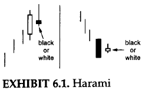
The Harami Pattern
|
-
During a bear move, the selling force reflected by a long black real body is followed by the
second day's inability to decide actions. This could be a sign that a possibility of trend
reversal since the second day's small real body is an alert that the bears' power has dimished.
The combination of candle lines in the harami pattern, with its first tall real body followed
by a small real body, is the reverse of the engulfing pattern. In the engulfing pattern, a
lengthy real body engulfs the preceding small real body. Another difference between the harami
and engulfing pattern is that for the two candles of the engulfing pattern, the colour of the
real bodies should be opposite. This is not necessary for the harami. However, in most instances,
the real bodies in the harami pattern are oppositely coloured.
-
The entire range of the second session may not be within range of the first session. For harami
all that is required is that the second real body be within the first real body, even if the
shadow of the second day is above or below the prior day's high and low. In the figure (left side)
shown in this section, on the second sessio the upper shadow moved over the prior white real body.
This is still a harami because the second session's real body was contained within the first real
body.
HARAMI CROSS
-
The regular harami has a tall real body followed by a small real body. Yet, there are no rules as to what
is considered "small" candle. This, like many other charting techniques, is subjective. A the general
principle, the more diminutive the second real body, the more potent the pattern. This is usually true
because the smaller the real body, the greater the ambivalence and the more likely a trend reversal. In
the extremes, as the real body becomes smaller as the spread between the open and close narrows, a doji
is formed. doji preceded by a long blackreal body during a decline (or a tall white real body during a rally)
is distinctive type of harami reffered to as a harami cross.
-
The harami cross, becasue it contains a doji, is viewed as a strong reversal signal than the regular
harami pattern by the Japanese. The harami cross is sometimes referred to as the petrifying pattern.
The best way to justify this name is that the preceeding trend has been frozen or petrified in
preparation for a reverse move. A harami cross occuring after a very long white candle is a pattern
a long trader ignores at his or her own peril. Harami cross can also call bottoms, but they seem more
efffective at tops.
|
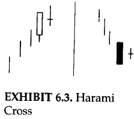
Harami cross
|
TWEEEZERS TOP AND BOTTOMS
-
Tweezers are two or more candle lines with matching highs or lows. They are called tweezers tops and
tweezers bottoms because they are compared to the two prongs of a tweezers. In a rising market, a
tweezers top is formed when the two or more consecutive highs match. In a falling market, a tweezers
bottom is made when two or more successive lows are the same. The tweezers could be composed of real
bodies, shadows, and/or doji. Ideally the tweezers should have a long first candle and a small real
body as the next session. This shows that whatever force the market had on the first session (bullish
force with a long white candle and bearish force with a long black candle), it was dissolving with the
following small real body with the same high (for a tweezers top) or same low (top a tweezers bottom).
If there is a bearish (for a top reversal) or a bullish (for a bottom reversal) candle signal that is
also a tweezers top, it adds more importance to the pattern.
|
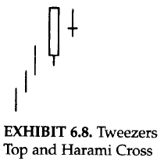
Tweezers top and harami cross
|
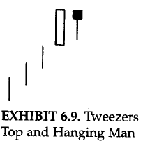
Tweezers top and hanging man
|
-
Tweezers top and harami cross- shows how, during an ascent, a long white line is
followed by a doji. This two-candle pattern, a harami cross with the same high,
can be a significant warning.
-
Tweezers Top and Hanging Man- The figure illustrates a tweezers top formed by
a long white candle and a hanging man line. If the market opens, and especially closes,
under the hanging man's real body, odds are strong that a top has been reached. This
two-line mixture can also be considered a harami. As such, it would be a top reversal
pattern during an uptrend.
-
Tweezers Top and Shooting Star- illustrates a tweezers top joined with the second
period's bearish shooting star line.
-
Tweezers Top and Dark-Cloud Cover- an ideal tweezers would have as its second session
not only the same high, but also a small real body. In the figure, the second candle is not a
small real body. However, this second session completes a variation on the dark-cloud cover
(the second day opens above the prior day's close instead of above the prior day's high). The
black candle session's high also just touches the prior period's high and then falls. Because
of this last fact- i.e.m both sessions have the same highs- it adds more negative impact to this
variation of the dark-cloud cover.
|
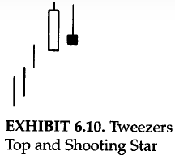
Tweezers top and shooting star
|
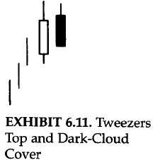
Tweezers top and dark could cover
|
-
Tweezers Bottom and Hammer- The figure shows a hammes session that successfully tests the
prior long black candlesticks's lows. The hammer, and the successfullytest of support, proves that
the sellers are losing control of the market. This two-line combinationis also a harami. This would
be another reason to view this action as support.
-
Tweezers bottom and piercing pattern- In the figure shown, while it doesn't have a small body
for the second candle, does complete a variation on the bullish piercing line. (A true piercing line
would open under the prior day's low. Here it opened under the prior day's close.) Because of this I
view it also as a tweezers bottom.
-
These examples of tweezers are not inclusive. They are representative of how top and bottom tweezers
should be confirmed by other candlestick indications so as to be valuable forecasting tools.
|
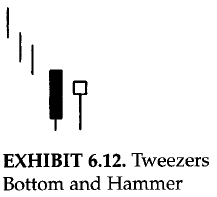
Tweezers bottom and hammer
|
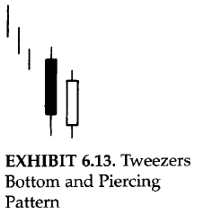
Tweezers bottom and piercing pattern
|
-
Tweezers should be viewed differently for daily, intraday, and weekly or long charts. This is because
there is nothing influential about having the same highs or lows for two daily or intraday sessions. It's
only if these sessions also meet the specific criteria for a tweezers (the first long, the second short, or
a candle pattern with the same highs or same lows) does it warrant attention. As such, the main aspect to
keep in mind with tweezers on a daily or intraday chart is that it takes a special combination of candle
lines to warrent acting upon tweezers.
-
For those who want a longer time perspective, tweezers tops and bottoms on the weekly and monthly candlestick
charts made by consecutive candlesticks could be important reversal patterns. This would be true even without
other candle confirmations becasue, on a weekly or monthly chart, for example, a weekly low this week that
successfully holds last week's lows could be a base for a rally. The same can't be said of daily or intraday
lows.
BELT-HOLD LINES
-
The belt-hold is an individual candle line. The bullish belt-hold is a strong white candle that opens
on the low of the session (or with a very small lower shadow) and closes at, or near, the session highs.
The bullish belt-hold line is also called a white opening shaven bottom. If it is at a low price area
and a long bullish belt-hold appears, it forecasts a rally.
-
The bearish belt-hold is a long black candle that opens on the high of the session (on within a few ticks
of the high) and continues lower through the session. If prices are high, the appearance of a bearish
belt-hold is a top reversal. The bearish belt-hold line is sometimes called a black opening shaven head.
-
The longer the height of the belt-hold candle line, the more significant it becomes. The actual Japanese
name for the belt-hold is a sumo wrestling term, yorikiri, which means "pushing your opponent out of the
ring while holding onto his belt".
-
A close above a black bearish belt-hold line should mean a resumption of the uptrend. A close under the
white bullish belt-hold line implies a renewal of selling pressure. Belt-hold lines are more important
if they confirm resistance or other belt-hold lines or if they have not appeared for a while.
|
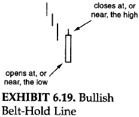
Bullish belt hold line
|
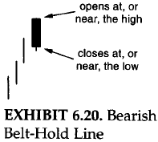
Bearish belt hold line
|
UPSIDE-GAP TWO CROWS
-
An upside-gap two crows (shown in the adjecent figure) is very rare. The upside-gap refers to the gap between
the real body of the small black real body and the real body preceding it. (The real body that precedes the first
black candle is usually a long white one.) The two black candles are the "crows" in this pattern. They are analogous
to black crows peering down ominously from a tree branch. Based on this portentous (bombastic) comparision, it is
obviously a bearish pattern. An ideal upside-gap two crows has the second black real body opening above the first
black real body's open. It then closes under the first black candle's close.
-
The rationale for the bearish aspect of this pattern is as follows:
-
The market is in an uptrend and gaps higher on the open.
-
The new highs fail to hold and the market forms a black candle.
-
But the bulls can take over some support in hardship, at least, because the close on this black candle sesion
still hlds above the prior day's close.
-
The third session paints a more bearish portrait with another new high and another failure to hold these highs
into the close. More negative, however, is that this session closes under the prior day's close. If the market
is so strong, why did the new highs fail to hold and why did the market close lower? Those are the questions
that the bulls are probably nervously asking themselves. The answers might be that the market may not be so strong
as they would like. If prices fail to regain high ground the next day (that is, the fourth session), then expect
lower prices.
|
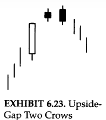
Upside gap two crows
|
THREE BLACK CROWS
-
The upside-gap two crows consists of two black candles. If there are three declining consecutive black candles, it is called
three black crows pattern. The three black crows indicate lower prices if they appear at high price levels or after a mature
advance. Three crows are also sometimes called three-winged crows. The Japanese have an rxpression, "Bad news has wings".
-
This is an appropriate saying for the three-winges crow pattern. The three crows are, as the name implies, three black candles.
Likened to the image of a group of crows sitting ominously in a tall dead tree, the three crows have bearish implications. The
three lines should close at, or near, their lows. Ideally, each of the openings should also be within the prior session's real
body.
-
The three black crows would likely be useful for longer-term traders. This is because this patter is completed on the third black
candle. Obviously, by the tim this occurs the market has already substantially corrected.
|
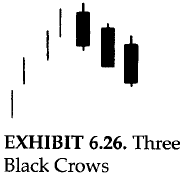
Three black crows
|
THREE ADVANCING WHITE SOLIDERS
-
The opposite of the three black crows is three advancing white soliders or, more commonly, three white soliders. Like much
of the candle terminology, this pattern has a military association. It is a group of three long white candles with consecutively
higher closes. If this pattern appears at low price area or after a period of stable prices, then it is a sign of strength ahead.
The three white soliders are a gradual and steady rise with each white line opening within or near the prior session's white real
body. Each of the white candles should close at, or near, its highs. It is a healthy method for the market to rise (although if
the white candles are very extended, one should be catious about an overbought market).
|
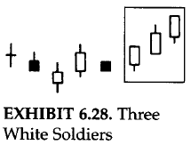
|
-
If the second and the third or just candle shows signs of weakening, it is an advance block pattern. This means the rally is
running into trouble and longs should protect themselves. Be especially cautious about this pattern during a mature uptrend.
Signs of weakening could be progressively smaller white real bodies or relatively long upper shadows.
-
If the last two candles are long white ones that make a new high followed by a small white candle, it is called a stalled
pattern. It is also sometimes called a deliberation pattern. The bulls' strength has been at least temporarily exhausted
after this formation. This last small white candle can either gap away from the long white body (in which case it becomes
a star) or it can be, as Japanese express it, "riding on the shoulder" of the long white body (i.e., be at the upper end
of the prior long white real body). The small real body discloses a deterioration of the bulls' power.
-
Although the advance block and stalled patterns are not normally top reversal patterns, they can sometimes precede a
price decline.The advance block and stalled patterns should be used to liquidate or protect longs, but usually not to
short. They are generally more consequential at higher price levels. These patterns can be at low price area or
during a rally.
-
There is not much difference between the advanced block and stalled pattern. The main factor to consider with three
white soliders is that it is most constructive for each of the three candles to close at or near its highs. If the
latter two white candles shows signs of hesitation, either with small real bodies or uppper shadows, then it is a
clue that the rally is losing force.
-
It id found that on corrections, the first or second white candle that started hte three white soliders is often
support.
-
The market sometimes correct after the three white soliders. We should expect support as the stock gets to the
second, or especially the first, white solider.
|
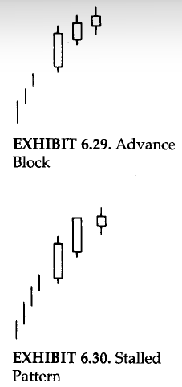
|
THREE MOUNTAINS AND THREE RIVERS
-
There is a group of longer-term topping and bottoming pattern that include the three moauntain, three rivers, the three
Buddha tops, inverted three Buddha, dumpling tops, fry-pan bottoms, and tower tops and bottoms.
-
Three mountain top is supposed to represent a major top. If the market backs off from a high three times or makes three
attempts at a high, it is deemed a three mountain top. The high point of the final mountain ideally should be confirmed
with a bearish candle indicator (for example, a doji or dark-cloud cover). If the central mountain of a three mountain
top is the highest mountain, it is a special type of three mountain called a three Buddha top. The reason for this name
is because, in Buddhist temples, there is a large central Buddha with smaller Buddhas (i.e., saints) on both sides. This
is the same pattern as the West's head and shoulders top.
-
Although the three Buddha top is analogous to the Western head and shoulders pattern, the theory about the japanese three
Buddha pattern was used over a hundred years before the head and shoulders was known in America. (The earliest reference
seen to a head and shoulders pattern in the United States was by Richard Schabaker in the 1930s).
-
It is intriguing how market observers from both the West and the East have come up with this same pattern. Market
psychology is the same around the world, or, as a Japanese proverb expresses, "The tone of a bird's song is the same
everywhere".
-
The three river bottom pattern is the opposite of the three mountain top. This occurs when the market tests a bottom level
three times. The peak of the troughs should be exceeded to confirm a bottom. The equivalent of the Western inverted head
and shoulders bottom is called, not surprisingly, an inverted three Buddha.
-
The peaks of each mountain were almost the same. This is not necessary. It is still considered a three mountain top if
the three price peaks are not exactly at the same highs. If A, B, and C are three peaks where B and C are slightly higher
levels. This would still be considered a three mountain top.
|
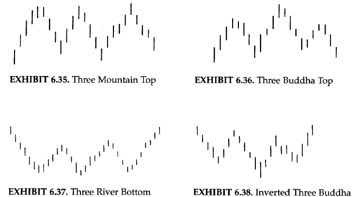
|
COUNTERATTACK LINES
-
Counterattack lines are formed when opposite coloured candles have the same close. The best way to describe this pattern is
by discussing the illustrations on the right-side of this section. The figure above is an example of a bullish counterattack
line. This pattern occurs during a decline. The first candle of this pattern is usually a long black candle. The next session
opens sharply lower. At this point, the bears are feeling confident. The bulls then stage their counterattack as they push
prices back up to unchanged from the prior close. The prior downtrend has then been suspended.
-
The bullish counterattack is comparable to the bullish piercing line. If you remember, the piercing line has the same
two-candle configuration as that shown for the bullish counterattack pattern. The main differnece is that the bullish
counterattack line does not move into the prior session's white real body. It just gets back to the prior session's
close. The piercing pattern's second line pushes well into the black real body. Consequently, the piercing pattern is
a more significant bottom reversal than is the bullish counterattack line. Nonetheless, as shown in same examples below,
the bullish counterattack line should be respected, since it proves that there is a change in the flow of direction of
the market.
-
The figure below is the bullish counterattack line is the bearish counterattack line. The first candle, a long white one,
keeps the bullish momentum going. The next session's opening gaps higher. The longs are happy then the bears come out
fighting and pull prices to the prior day's close. The bulls' tide of optimism on the second day's opening probably turned
to apprehension by the close. As the bullish counterattack line is rlated to the piercing line, so the bearish counterattack
line is related to the dark-cloud cover. The bearish counterattack line is realted to the dark-cloud cover. The bearish
counteratack, like the dark-cloud cover, should ideally open above the prior day's high. Unlike the dark-cloud cover, though,
the close does not go into the prior day's white candle. Thus, the dark-cloud cover sends a stronger top reversal signal than
does the bearish counterattack line.
-
An important consideration of the counterattack lines is that second session should open robustly higher (in the case of the
bearish counterattack) or sharply lower (for the bullish counterattack). The idea is that on the opening of the second day of
this pattern, the market has moved slightly in the direction of the original trend. Then, by the close, it moves back to unchanged
from the prior session. In doing so, it changes the market's texture in one day.
-
A mentioned in the secion of three black crows, becasue we need to wait for three black candles for the completion of
that signal, much of the move may be lost bt the time the third candle of the three black crows unfolds. In this case,
however, eith the first black candle's counterattack line, we would have received an early tirning signal in one session
that was further confirmed with the three black crows.
|
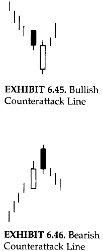
|
DUMPLING TOPS AND FRYPAN BOTTOMS
-
The dumpling top is a top reversal that usually has a small real bodies as the market forms a convex pattern. Confirmation
of the dumpling top is when the market gaps down. This pattern is the same as the Western rounded top. The only difference
is that the dumpling top has the extra bearish kicker of a gap lower. (A gap down is called a "falling window" in candle
terminology.)
-
The market is ascending with higher highs and goes into a period where the highs are the same, and then goes to lower highs.
As such, the pace of the rally is slackening. Then when you have a gap down to complete the dumpling top, it just puts another
nail in the bulls' coffin.
|
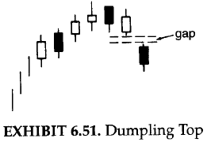
|
-
The frypan bottom reflects a market that is bottoming and whose price action forms a concave design and then opens a gap to
the upside (i.e., a rising window). It has the same appearance as a Western rounded bottom, but the Japanese frypan bottom
must have a gap higher to confirm this pattern. With the frypan bottom, the market goes from lower lows to the same lows and
then higher lows.
-
This pictorially proves that the bears are losing a foothold. Then, when you add a rising gap to this scenario, it gives even
more proof that the bears have lost control of the market. The Japanese will say that with a frypan bottom the parket becomes
"immune to bad news". As such, if a market builds a frypan bottom- especially in spite of bearish news- it would be very
impressive.
|
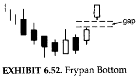
|
TOWER TOPS AND BOTTOMS
-
The tower top unfolds at high price levels. During a rally, there is a short-term lull (pause) after one or more white
candles. Then one or more large candles emerge. This creates a top with a white and black "tower" on either side of the
small real bodies. That is, long candles on the way down and long candles on the way up.
-
Sometimes tower tops send out a signal late in the move (since we have to wait for a black candle).
|
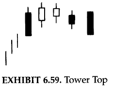
|
-
The tower bottom occurs in a descending market in which one or more tall black candles keep the bearish momentum intact.
Then some small real bodies lessen the bearish tome and finally a tall white candle finalizes the tower bottom.
-
The closest Western comparison to the tower top and bottom would be the spike, or V, reversal. In the spike reversal, the
market is in a strong trend and then abruptly reserves to a new trend.
-
The tower top and bottom, like some other candlestick signals such as three black crows, may be most useful for longer-term
traders since the tower is often finalized late in the move.
-
The tower bottom is analogous to the frypan bottom while the tower top is similar to the dumpling top. The main distinction
between these two patterns is that long black and white candles are needed for the towers and there is no gap required. The
dumpling top and frypan bottom require gaps.
|
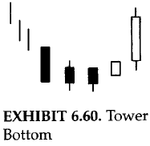
|
CONTINUATION PATTERNS
-
Most candle signals are trend reversals. There are , however, a group of candle patterns that are continuation indicators. A continuation
pattern is one in which the market should continue the same trend as that in force before the continuation pattern. For instance, a continuation
pattern following a rally means that the trend remains up and we should expect the rally to remain in force. (This, however, does not preclude a
correction after the continuation pattern before the rally, hopefully, unfolds.)
-
As the Japanese express it, "Thre are time to buy, times to sell, and times to rest". Many of these continuation patterns imply a time to
rest, a breather, before the market resumes its prior trend. The continuation formations reviewed in this chapter are windows (and patterns
that include windows), the rising and falling three methods, separating lines, and three white soliders.
WINDOWS
-
The Japanese refer to what we call in the West a gap as a window. Whereas the Western expression is "filling in the gap",
the Japanese would say, "closing the window". There are two kinds of windows, one bullish and other bearish.
-
A rising window is a bullish signal. There is a price vacuum between the prior session's high (that is, the top of the upper
shadow) and the current session's low (e.g., the bottom of the lower shadow).
-
It is said by the Japanese technicians to "go in the dirrection of the window". This is because windows are continuation signals.
Consequently, with the emergence of a rising window, one should look to buy on dips, and with a falling window to sell on bounces.
-
It is also said by the Japanese that "corrections stop at the window". This means windows can become support and resistance
areas. Thus, a rising window (the entire window) should also be a zone of support on pullbacks. If the pullback closes under the
bottom of the window, the prior uptrend is voided. In the rising window figure, the market got under the bottom of the window,
but since it didn't close under this area, the rising windows support remains intact.
-
The entire rising window becomes a potential support zone. The disadvantage with a large window is that the whole zone
is potential support. Consequently, we don't have so tight a support (with a rising window) or resistance (with a falling
window) as one would have with a very small window.
-
If there are two windows. Window 1 and window 2, window 2 being at higher price levels. After window 2 is breached, the
window 1 becomes support. If a window support is broken, look for another window under the one that was broken as next
support area.
|
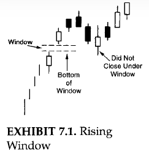
|
-
Falling window is a bearish signal in which there is a gap between the prior sesion's low and the current session's high.
-
Likewise, a falling window implies still lower levels. Any price rebounds should run into resistance at this falling
window (the entire window). If the bulls have enough force to close the market above the top of the falling window, the
downtrend is done.
-
There is a belief in the West that a gap is always filled. But as we have seen that corrections stop at a window, once
prices try to fill a gap we can then consider buying (in a rising window) or selling (in a falling window).
-
There is a common misunderstanding with windows that the real bodies don't touch. In case the shadows overlap, it is not a
window. So, no overlap between shadows is the main criteria for window. No matter how large the "gap" between the real bodies,
it is not a window unless there is a space between the shadows.
-
No matter how tiny a rising window, that window should be potential support. The same is true with a falling window as
resistance.
-
Size doesn't matter with windows. Although the rising window's support zone before bouncing. Therefore, if you are
aggressively bullish as a market approaches the rising window, you can consider buying as a market approaches the rising
window, you can consider buying even if it gets close to the top of the window. How one uses a window is dependent on
trading style and aggressiveness. There should be a stop (mental or otherwise) if the market clsoes under the bottom of
the rising window.
|
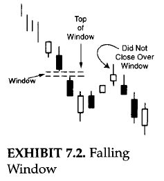
|
TASUKI
-
The tasuki are a specific combination of two candle lines that gap higher or lower.
-
The upward gapping tasuki is made of a rising window formed by a white candle and then a black candle. The black candle opens
within the white real body and closes under the white candle's real body. The close on the black candle day is the flight point.
If the market closes under the bottom of the window, the bullish outlook of the upward gap tasuki is voided.
-
It is the window itself that is critical. All one needs to remember is that if there is a rising window (such as the upward
tasuki), it is bullish signal and the window should be support. It does not matter what the candle lines look like after the
rising window. The main concern is looking at that rising window as support based on the close.
|
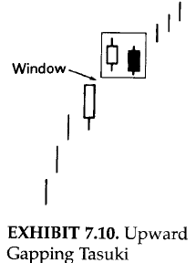
|
-
The same concept is true in reverse for a downward gapping tasuki. The market opens a falling window with a black candle
followed by a white candle. The two candles of the tasuki should be about the same size. Both types of tasuki are rare.
-
Since the downward gapping tasuki has a falling window, the window should be resistance. A close over the top of the falling
window would void the bearish implications of the downward gapping tasuki.
|
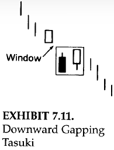
|
High-Price and Low-Price Gapping Plays
-
It is normal after a sharp advance for the market to consolidate the gains. Sometimes this consolidation is by a series of
small real bodies.
-
A group of small real bodies after a strong white session tells us that the market is undecided. These small real bodies,
while changing the trend from up to neutral, are in a sense healthy since, by treading water, the market is then relieving
its overbought condition.
-
If there is a rising window from these small real bodies, it is a bullish signal. This is the high-price gapping play pattern.
It is called this because prices hover near their recent highs and then gap to the upside.
|
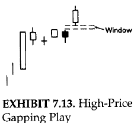
|
-
A low-price gapping play is the bearish counterpart of the high-price gapping play. The low-price gapping play is a downside window
from a low-price congestion band. This congestion band (a series of small real bodies) initially stabilized a steep decline. At first,
this group of small candles gives the appearance that a base is forming. The break to the downside via a window dashes these bullish
hopes.
|
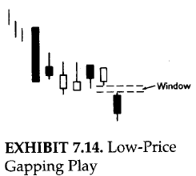
|
GAPPING SIDE-BY-SIDE WHITE LINES
-
In a rally, an upward-gapping white candle followed the next session by another similar-sized white candle with about the
same opening is a bullish continuation pattern. This two-candle pattern is refered to as upgap side-by-side white lines.
-
It is the window that is critical. The combination and colours of the candle lines after a rising or falling window pattern
aren't important. A falling window puts the trend up with the windows as support or resistance.
|
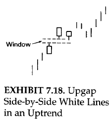
|
-
There are rarer side-by-side white lines that gap lower. These are called downgap side-by-side white lines.
-
In the figure, we can see that inspite of the dual white candles, it is still considered a bearish signal because of the
falling window. These white lines are viewed as short covering. Once this short covering evaporates, prices should move lower.
The reason the downgap side-by side white line pattern is especially rare is because black candles, not white candles, are
more natural in a declining price environment.
-
The candle lines that make the gapping side-by-side white candles are not critical to remember. What is important is
the rising and falling windows that are part of these patterns.
-
The pattern has minor consequence if there are two white candles (as with the side-by-side patterns) or a black and white
(as with the tasuki) after the window. It is the window itself that gives us the trend and the support or resistance area.
-
In the downgap side-by-side white candles, it is not surprising that this is a bearish signal in spite of the two white
candles. Thisis because it is the falling window of that pattern that defines the trend (in this case, down). It would
take a close over the top of the falling window to neagte the bearish outlook of the downgap side-by-side white lines.
|
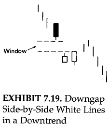
|
RISING AND FALLING THREE METHODS
-
The three methods include the bullish rising three methods and a bearish falling methods. These are both continuation patterns.
That is, the trend before the bullish rising three methods should continue higher once the bullish three methods is completed.
Likewise, a bear trend remains in effect after the bearish falling three methods.
-
The rising three methods is composed of:
-
A long white candle.
-
The white candle is followed by a group of falling or lateral small real body candles. The ideal number of small
candles is three but two or more than three are also acceptable if they hold within the long white candle's high-low
range. Think of the small candles as forming a pattern similar to a three-day harami pattern since they hold within
the first session's range. (For this pattern, that would include holding within the shadows; for a true harami they
would have to hold with the real body.) The small candles can be either colour, but black is most ideal for this pattern.
-
The final day should be a strong white real body session with a close above the first day's close. The final candle
line should ideally also open above the close of the previous session.
-
This patttern resembles the Western bull flag or pennant formation. Yet the concept behind the rising three methods is from
the 1700s. The three methods pattern is considered a rest from trading and a rest from battle. In more modern terms, the
market is, with the group of small candles, "taking a breather".
-
The ideal rising three methods has three small black real bodies within the entire trading range of a white real body.
-
The challange we have with the rising three methods is from a risk / reward aspect. By the time the rising three methods
is completed, a stock might be far from its most recent lows. In such a secnario, buying on the completion of the three
methods may not offer an attractive trade. As such, one should think of the potential profit once the rising three methods
is completed compared to its risk (the risk being low of the white candle that stated the rising three methods).
-
This pattern helps define a turning point from a sell-off.
|
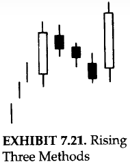
|
-
The falling three methods pattern is the bearish counterpart of the rising three methods pattern. For this pattern, the
market should be in a downtrend. A long balck candle is followed by about three small rising candles whose real bodies
hold within the first candle's range (including shadows). The final session should open under the prior close and then
close under the first black candle's close. This pattern resambles a bear flag or bear pennant formation.
-
The ideal version of this pattern has the small real bodies as the opposite colour of the first long real body. That is,
for a bullish rising three methods, there should be small black real bodies; and for the bearish falling three methods, three
small white real bodies. Nonetheless, two and up to five small real bodies work fine. Also, the small real bodies can be any
colour.
|

|
SEPARATING LINES
-
The separating lines have the same open as the previous opposite colour candle. The separating line is a continuation
pattern. It is easy to see why. During a market rise, a black real body (especially a relatively long one) would be a
bull's cause for concern. The bears might be gaining control. However, if the next session's opening gaps high enough
to open at the previous black session's opening price, it impressively proves that the bears have lost control of the
market- especially if that session closes as a white candle. This is the scenario that unfolds with the bullish
separating line as shown in the figure (in this section). The white line ideally should also be a bullish belt-hold
(that is, open in the low of teh session and close at, or near, the high of the session).
-
The opposite would be true with a bearish separating line in the figure (shown in this section). This is viewed as a
bearish continuation signal. Separating lines are rare. While most of us would like to see an ideal version of a particular
candle pattern, even variations of these patterns can also prove useful.
-
Although the bullish separating lines are rare, they normally appear during a rally. There are a few instances, however,
where a bullish separating line can help signal a bottom.
|

|
THE MAGIC DOJI
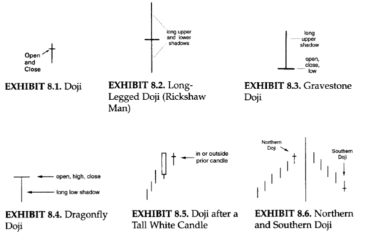
-
The doji is a significant reversal indicator. The doji is a distinct trend change signal, especially during rallies. The likelihood
of a reversal with the emergence of a doji increses if:
-
Subsequent candles confirm the doji's reversal potential.
-
The market is overbought or oversold.
-
The market doesn't have many doji. If there are numerous doji on a particular chart, one should not view the emergence of a new doji
as a meaningful development.
-
The ideal doji sesssion has the same opening and closing price, yet there is some flexibility to this rule. If the opening and closing prices
are within a few ticks of each other (for example, a few cents in stocks or a few thirty-seconds in bonds, and so on), the line could still
be viewed as a doji.
-
To decide whether a near-doji day (that is, where the open and close are very close, but not exact) should be considered a doji or not should
be based on:
-
Compare a near-doji in relation to recent action. If there were a series of very small real bodies, the near-doji day would not
be viewed as significant since so many other recent periods had small real bodies. If, however, a doji like session emerges among
tall candles, then we can say that such a session could have the same implications as a doji since this session is displaying
there is something very different on that session from the preceding action.
-
If the market is at an important market junction.
-
If the market is extremely overbought or oversold.
-
If there are other technical signals sending out an alert.
-
Since a doji can be a significant warning, it is better to attend to a false warning than to ignore a real one.
-
Doji are valued for their ability to call market tops. This is especially true after a long white candle in an uptrend.
-
The reason for the doji's potential negative implications in uptrends is because a doji represents indecision. Indecision, uncertainty,
or vacillation by buyers will not maintain a rally. It takes the conviction of buyers to sustain a rally. If the market has had an extended
rally, and / or is overbought, and then a doji surfaces, it could mean the scaffolding of buyers' support will give way.
-
A caveat, from my experience, is that as successful as doji are at calling tops, they tend to lose some reversal potential in downtrends.
The reason may be that a doji reflects a balance between buying and selling forces. With ambivalent market participants, the market could
fall, as the market saying goes, "fall of its own weight". This is similar to the idea that strong volume is more important to confirm
an upside breakout than volume confirmation for a downside breakout.
-
Thus, a doji in a rally could signal an exhausted market. But with a doji during a price descent, the market may continue its fall. Because
of this, doji need more confirmation to signal a bottom than they do a top. For example, a doji that confirms support should be considered
although it comes during a decline.
-
To separate a doji during a rally from doji during declines, I call the former Northern doji and the latter Southern doji.
-
Doji may work well at calling bottoms. This brings out a povital point about candle charts in general. All of the candle lines or
patterns may be effective in markets (only in some markets). Seeing which works well comes with experience.
-
Doji work better at calling tops reversal than bottom reversals.
-
Where a doji is in relation to its preceding trend is of pivotal importance.
THE NORTHERN DOJI (DOJI DURING RALLIES)
-
The Japanese say that with a doji after a tall white candle, or a doji in an overbought environment, that the market is "tired".
That is a wonderfully appropriate way to view doji. A doji may not mean an immediate price reversal. The doji shows us the market
is vulnerable, and may be at a transition point. A doji, in a single session, means the trend may be in the process of changing.
A doji is a session in which the bulls and bears are in complete balance. The doji indicates that there is something very different
on that day (in which the open and close are the same) from the preceding candle lines where the closes were well above the
openings.
|
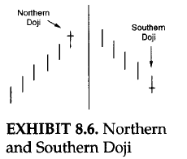
|
THE LONG-LEGGED DOJI (RICKSHAW MAN), THE GRAVESTONE DOJI, AND THE DRAGONFLY DOJI
-
As shown in the figure above in this section, some doji have nicknames depending on the open / close (i.e., the horizontal
components of the doji) is at the low or high of the session or if there are unusually long upper and lower shadows on the doji.
-
A candle line with long upper and lower shadows and a small real body is called a high-wave candle. If such a candle line is a
doji instead of a small real body, then it is called a long-legged doji. It also has the nickname rickshaw man.
-
The doji portion of the long-legged doji shows the market is at a transition point. The long upper shadow shows the market had
rallied during the session, but by session's end had backed off from these highs. The extended lower shadow visually depicts a
market that had sold off during the session; by session's end it had been able, by the close, to recoup some of its lost ground.
In other words, the market rallies, sells off, rallies, etc. It is a confused market. These long shadows hint, as the Japanese
say, "The market has lost its sense of direction." As such, a long-legged doji is an indication of a market separating from its
trend.
|
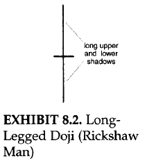
|
-
The gravestone doji is another distinctive doji. It develops when the open, low, and close are at the low of the day. This
line is an example of how visually intuitive candles are. Even if you never saw an explanation of the gravestone doji, just
by looking at it, would you think it was a bullish or bearish signal? Of course, the answer is bearish. With its extended
upper shadow and close at the low of the session, we can graphically see that at some time during the session the stock had
rallied and by session's end the bears dragged this stock down to the lows at the close. It can be viewed as the ultimate
shooting star. The shooting star has a long upper shadow and small real body. If the shooting star's real body becomes a doji,
then we have a gravestone doji.
-
The gravestone's forte is in calling tops. The shape of the gravestone doji makes its name appropriate. As we have discussed,
many of the Japanese technical terms are based on military analogies. In Japanese candlestick literature it is said that the
gravestone doji represents that gravestone of the bulls that have died defending their territory.
-
As omnious as "gravestone" sounds, it does not imply a large move lower. While the gravestone doji, because of its extended
upper shadow and close at the session low, does increase the chances for a turn, it does not forecast the extent of a potential
decline. Canlde signals are unexcelled for spotting the early reversals, not to predict the extent of a move.
|
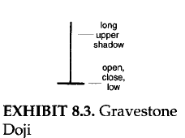
|
-
The dragonfly doji is the bullish counterpart of the gravestone doji. The dragonfly has the open / close at the highs of
the session. This means the market had touched much lower lows during the session, but had impressively managed to close
at, or very close to, the highs. This is like a hammer, but the hammer has a small real body where the dragonfly doji has
no real body since it is a doji.
|
|
-
The general concept with doji (and for all candle signals) is that one should look at what happened before the signal. For
instance, a doji in a rally is a potential reversal. Therefore, there needs to be a rally to reverse. This means that doji
have little forecasting implications if they are in a trading range environment since there is no trend to reverse. The
Japanese appropriately call a market that is locked within a range a "box".
-
The doji in the figure (Doji in a Box Range) is reflecting on a micro scale what the trading range environment on a more macro
aspect is showing: The market is undecided. With no trend to change, the doji in this figure has no forecasting implications,
except for the fact that it is confirming a trendless environment. An exception to this is if a doji, while still in a trading
range, is at the top or bottom end of a range. As such, it is conforming resistance or support and could be a useful signal.
|
|
THE TRI_STAR
-
The tri-star is a very rare reversal pattern. As shown in the figure (Tri-Star Top and Bottom), the tri-star is formed by
three doji lines at a new high for the move.
-
The ideal tri-star top has three doji with the middle doji higher than the first and second doji. While this pattern
greatly increases the chances for a top reversal, it does not forecast the extent of the potential decline.
|
|
A CLUSTER OF CANDLES
A confluence / cluster of candles can help pinpoint support or resistance.
CANDLES WITH TREND LINES
Here we examine candle techniques in conjuction with trend lines, breakouts from trend lines, false breakouts, and uses of penetrated support
and resistance areas.
RISING SUPPORT LINE
-
Rising support line is obtained by connecting two, and preferably three, or more reaction lows. In rising support lines on
candle charts, the bottom of the lower shadows are connecting points. This ascending line demonstrates that buyers are more
aggressive than sellers since demand is stepping in at higher lows.
-
There is a saying that there are more buyers than sellers. Since a trade requires both a buyer and seller, I prefer to think
of it as not more buyers than sellers, but more aggressive buyers than setters.
-
A regular rising support line, since it is ascending, is considered bullish.
|
|
-
A falling support line is shown in the figure in the right (Falling Support Line). The traditional support line is derived by
connecting higher lows. The line joins lower lows.
-
The falling line's usefulness comes into play because there there will be many instances in which prices rebound from this
descending line. This line gives us a potential support area when none may exist. A situation where there may be no evident
support is when a market makes either a low for the move or an all-time low.
-
The falling support line, because the market is making lower lows, can be considered as a bearish support line. As such,
bounces from this line are likely to be only marginal and temporary. Yet, it can be an area to consider buying, especially
if there is a convergence of technical indicators at that line.
|

|
-
The figure on the right shows (in this section) a falling resistance line. It is derived by joining at least two reaction
highs; Three or more would make the line more meaning full(sense). It shows that sellers are more aggressive than buyers
as evidenced by the sellers' willingness to sell at lower highs. This reflects a market that is trending lower. With a
resistance line on the candle charts, we connect the tops of the upper shadows.
|
|
-
A regular resistance line is made with a series of lower highs. But what if the market is at at all-time high and there are no
former highs from where we can get a clue of a potential resistance area? In this instance we can use a rising resistance line.
As shown in the figure on the right in this section, this is built by linking a series of higher highs (instead of the falling
resistance line's lower highs).
|
|
SPRINGS AND UPTHRUSTS
-
A spring develops when market breaks under a horizontal support area and then springs back above that previously broken
support. In other words, new lows could not hold. Once a spring is formed, we get a stop-out area and a price target.
-
As shown in the figure on the right-side (in this section), when a market gets back above a recently broken support area,
one can consider buying. If the market is solid, it should not get back to the most recent lows. That would be a stop level
(preferably on a close). The target for the spring is either its high before the spring was made or the top end of its trading
range.
-
It will be more bullish for a spring if the break of support is on light volume and the subsequent rebound above the recently
broken support is on heavier volume.
|
|
-
An upthrust is shown on the right (in this section). This is when there is penetration of a horizontal resistance area and
then bulls fail to sustain these new highs. There is another way of saying a false bearkout. To use an upthrust for trading,
when the maeket gets back under its former resistance area, one can consider selling. If the market is indeed weak, it should
not return to the most recent highs. A downside target is its most recent low or the bottom of a recent trading range.
-
The likelihood of an upthrust successfully working should be increased if the break over the resistance is on low volume
and the consequent return move under the old resistance is on high volume.
|
|
At times there will be "scouting parties" (not a candle) sent by big traders, commercial accounts, or even market makers or locals to
test the resolve of the opposing troops. For instance, there might be a move by the bulls to try to propel prices over a resistance
area. In such a battle, we have to monitor the determination of the bulls. If this bullish scouting party can set up camp in enemy territory
(that is, close above resistance and maintain the new highs), then a beachhead is made. New, fresh bullish troops should join the scouting
party. The market should move up. As long as the beachhead is maintained (that is, the market holds above resistance), the bulls will have
control of the market. But, once the market pushes back under the broken resistance, the bulls have lost control.
THE CHANGE OF POLARITY PRINCIPLE
The Japanese have a saying: "A red lacquer dish needs no decoration". This concept of simple beauty is the essence of a technical principle
is frequently used. It is as simple as it is powerful:
-
Old support becomes new resistance and old resistance becomes support. This is called "change of polarity" principle.
-
The concept behind the change of polarity principle (although not traditionally called that) is an axiom discussed in many
books on technical analysis. Yet, it is an underutilized gem.
|
|
|
CANDLES WITH RETRACEMENT LEVELS
-
Market usually do not trend straight up, nor do they fall vertically down. They often retrace, or correct, some of their
advance, or decline, before resuming the prior trend.
-
Some of the more popular retracement levels are the 50% level and the Fibonacci figures of 38% and 62%. The popular 50%
correction is also a Fibonacci is also a Fibonaaci ratio. The 50% retracement is probably the most widely monitored level.
-
While retracement levels can become support or resistance, it not not recommended to buy or sell at a retracement area
unless it is confirmed by a candle pattern.
|
|

|
CANDLES WITH MOVING AVERAGES
The moving average is one of the oldest and most popular tools used by techniques. Its strength is as a trend-following device that
offers the trader the ability to catch major moves. Thus, it is utilized most effectively in trending markets.
THE SIMPLE MOVING AVERAGE
-
The most basic of the moving averages is the simple moving average. This is the average of all the price points used.
-
The general formula is:
(P1 + P2 + P3 + P4 + P5)/n
Where P1 = the most recent price
P2 = the second most recent price and so on
n = the number os data points
-
The term "moving" in moving average is applicable because, as the newest data is added to the moving average, the oldest data is dropped.
Consequently, the average is always is always moving as the new data is added.
-
The longer the moving average (n), the less effect an individual price will have on it.
-
The shorter the term of the moving average, the closer it will "hug" prices. Thus us a plus insofar as it is more sensative to recent
price action. The neagtive aspect is that it has a greater potential for whipsaws. Longer-term moving averages provide a greater smoothing
effect, but are less responsive to recent prices.
-
The spectrum of moving average users runs from intraday trader, who uses moving average of real-time trades, to the hedger, who may focus
on monthly, or even yearly, moving averages.
-
Other than the length of the average, another avenue of analysis is based on what price is used to compute the average. Most moving average
systems use, as we did in our prior example, closing prices. However, moving averages of highs, lows, and the midpoint of the highs and lows
have all been used. Sometimes, even moving averages of moving averages are used.
THE WEIGHTED MOVING AVERAGE
A weighted moving average assigns a different weight to each price used to compute the average. Almost all weighted moving averages
are front loaded. That is, the most recent prices are weighted more heavily then older prices. How the data is weighted is a matter
of preference.
THE EXPONENTIAL MOVING AVERAGE
The exponential moving average is a special type of weighted moving average. Like the basic weighted moving average, the exponential moving
average is front weighted. Unlike other moving averages, though, the exponential moving average incorporates all prior prices used in the data.
This type of moving average assigns progressively smaller weights to each of the past prices. Each weight is exponentially smaller than the
previous weight. hence, the name exponential moving average. One of the most popular uses of the exponential moving averages is fot the MACD.
USING MOVING AVERAGES
-
Moving averages can provide objective strategies with clearly defined trading rules. Many of the computerized technical trading systems
are underpinned on moving averages. Some of the common uses of the moving average include:
-
Comparing the price versus the moving averages as a trend indicator. For instance, a good gauge to see if a market is in an
intermediate-term uptrend could be that prices have to be above the 65-day moving average. For a longer-term uptrend, prices
would have to be higher than the 40-week moving average.
-
Using the moving average as support or resistance levels. A close above the specified moving average would be bullish. A close
below the moving average would be bearish.
-
Monitoring the moving average band (also known as envelopes). These bands are a certain percentage above or below the moving
average and can serve as support or resistance.
-
Watching the slope of the moving average. For instance, if the moving average levels off or declines after a period of a sustained
rise, it may be a bearish signal. Drawing trend lines on the moving averages is a simple method of monitoring their slope.
-
Trading with dual moving averages. One can compare a shorter-and longer-term moving average to each other. If the short-term moving
average crosses under the longer-term moving average, it would turn the trend down. In Japan, such a crossover is called a "dead
cross". When a shorter term moving average crosses over a long-term moving average, the Japanese refer to that as a "golden cross"
because it is viewed as a potentially bullish signal. Some traders will even take the dual moving averages s step further by saying
that for a trend to be higher, not only does the short-term moving average have to be over the long-term moving average, but the slope
of both moving averages must be up.
-
The 30-day and shorter-term 5-day moving averages are good gauges for the equity markets.
-
For futures, the 40- and 65-day moving averages are useful.
-
They are not based on optimum moving averages. An optimum moving averages today might not be optimum one tomorrow. The length of the
moving averages used in the following examples are not the important point. What is meaningful is how moving averages can be melded
with candles.
CANDLES WITH OSCILLATORS
-
Unlike pattern recognition techniques that are subjective (this includes candlestick techniques), oscillators are mathematically derived
techniques that offer a more objective means of analyzing the market. They are widely used and are the basis of many computerized trading
systems.
-
Oscillators include such technical tools as the relative strength index, stochastics, and MACD. The three major uses of the oscillators are:
-
As a divergence indicator There are two kinds of divergence. A negative, or bearish, divergence occurs when prices are at a new
high, but the oscillator is not. This implies the market is internally weak. A positive, or bullish, divergence is when prices are
at a new low, but the oscillator does not hit a new low. The implication is that the selling pressure is losing steam.
-
As overbought/oversold indicators This means oscillators can notify the trader if the market has become overextended and, thus,
vulnerable to a correction.
-
As confirmation of the force behind a trend's move Oscillators can confirm the market's momemtum, measuring the velocity of a price
move by comparing price changes. In theory, the velocity should increase as the trend is under way. A flattening of momentum could be an
early warning that a price move may be decelerating.
-
There is a Japanese saying: "All clouds do not rain". The oscillator is a rain cloud that has the potential for rain - but the only
way to tell it's raining is either seeing or feeling the raindrops. So it is with oscillators. An oscillator is like a storm cloud, but
we need a final confirmation with candle signals. An overbought or oversold oscillator is a warning, a cue, with final confirmation coming
with a candlestick pattern.
THE RELATIVE STRENGTH INDEX
-
The RSI compares the relative strength of price advances to price declines over a specified period. Nine and 14 days are two of the most
popular periods used. The RSI is figured by comparing the gains of up sessions with the losses of the down sessions over a given time frame.
The calculations used are dependent only on closing prices. The formula is:
RSI = 100 - (100/(1 + RS))
where RS = average up points for
period / average down points for period.
-
Thus, computing a 14-day RSI entails adding the total gains made on the up days over the last 14 days (on a close-to-close basis) and
dividing by 14. The same would be done for the down days. These figures provide the relative strength (RS). This RS is then put into
the RSI formula. This RSI formula converts the RS data so that it becomes an index with a range between 0 and 100.
Using the RSI
The two main uses of RSI are as on overbought/oversold indicator and as a tool to monitor divergence.
-
As an overbought / oversold indicator, the RSI implies that the market is overbought if it approaches the upper end of this band
(that is, above 70%). At this point, the market may be vulnerable to a pullback or could move into a period of consolidation.
Conversely, at the lower end of the RSI range (usually below 30%), it is said to reflect an oversold condition. In such an environment,
there is a potential of a short covering move.
-
As a divergence tool, RSI calculations can be helpful when prices make a new high for the move and the RSI fails to make a concurrent
high. This is called negative divergence and is potentially bearish. Positive divergence occurs when prices make a new low, but the RSI
does not. Divergence is more meaningful when RSI oscillator readings are in overbought or oversold regions.
MOVING AVERAGE OSCILLATOR
Computing the Moving Average Oscillator
This indicator is obtained by substracting the shorter-term moving average from the longer-term moving average. It has plus or minus values.
Thus, a value above 0 means the shorter-term moving average is above the longer-term moving average. A reading under 0 means the shorter-term
moving average is less than the longer-term moving average.
Using the Moving Average Oscillator
-
Since this oscillator uses a short- and long-term moving average, we are comparing the short-term momentum to a longer-term momentum. This
is because the short-term moving average is more responsive to recent price activity. If the short-term moving average is relatively far
above (or below) the longer-term moving average, the market is said to be overbought (or oversold). As with the other oscillator, the moving
average oscillator is also used as a divergence vehicle.
-
As prices increase, the technician wants to see the short-term moving average increase relative to the longer-term moving average.
This would mean increasing positive values for the moving average difference line. If prices advance and the difference between the
short- and long-term moving averages narrows, the market is indicating that the shorter-term momentum is running out of steam.
STOCHASTICS (meaning involving a random variable)
-
The stochastic ocsillator us another popular tool. It, like all the other oscillators, provide overbought and oversold readings
and signals divergences. It also affords a mechanism to relate a shorter-term trend to a longer-term trend. The stochastic indicator
compares the latest closing price with the total range of the price action for a specified period. Stochastic values are between 0
and 100.
-
A high stochastic reading would mean the close is near the upper end of the entire range for the period. A low reading means that the close
is near the low end fo the period's range. The idea behind stochastics is that as the market moves higher, closes trend to be near the highs
of the range; as the market moves lower, prices tend to cluster near the lows of the range.
Computing Stochastics
The stochastic indicator is comprised of two lines: the %K and the %D. The %K line, called the raw stochastic or the fast %K, is more
sensative. The formula for the %K line is:
((Close) - (low of N)) * 100 / ((High of N) - (Low of N)) = %K
Where Close = current close
Low of N = low of the range during the period used
High of N = high of the range during the period used
The "100" in the equation converts the value into a percentage. Thus, if the close today is the same as the high for the period under
observation, the fast %K would be 100%. A period can be in days, week, or even intraday (such as hourly). Fourteen, nineteen and
twenty-one periods are some of the more common periods.
Because the fast %K line can be so volatile, this line is usually smoothed by taking a 3-period moving average of %K is called the slow %K.
Most technicians use the slow %K line instead of the choppy fast %K line. This slow %K is then smoothened again using a 3-day moving average
of the slow %K to get what is called the %D line. This %D is essentially a moving average of a moving average. One way to think of the
difference between the %K and %D lines is too view them as you would two moving average, and the %D line comparable to a longer-term moving
average.
Using Stochastic
-
As menationed preeviously, stochastics can be used in several ways. The most popular method is as a tool for showing divergence. Most
technicians who monitor stochastics use this aspect of divergence in conjunction with overbought/oversold readings.
-
Some technicians require another rule: to have the slow %K line cross under the %D line for a sell signal, or for the slow %K to move
above the %D for a buy signal. This is comparable to the bullish (bearish) signal of a faster moving average crossing over (under) the
slower moving average.
-
Another use is as a gauge for overbought/oversold. Most traders will view an 80% or higher reading as overbought, and 20% or lower
as oversold. For instance, to get a buy signal, the market must be oversold (20% or less for %D), there is positive divergence, and the
%K line is crossing above the %D line.
MOVING AVERAGE CONVERGENCE-DIVERGENCE
Constructing the MACD
While the Moving Average Convergence-Divergence (MACD) is composed of two lines, it is really a combination of three exponentially smoothed
moving averages.
1. The first line is the differnece between two exponential moving averages (usually the 26- and 12-period exponential moving averages).
2. The second line of the MACD is made by taking an exponential moving average (usually 9-period) of the difference between the two
exponential moving averages used to make the first line.
The second line is called the signal line.
Using the MACD
When the faster line crosses above the slower (the signal line), it is viewed as a positive. A bearish crossover is when the faster line moves
under the slower line. The MACD can also be used to find areas in which the market is overbought or oversold. Because of the slower nature of
MACD, it is not generally used as a short-term trading tool.
CANDLES WITH VOLUME
-
One of the most important clues sent out by the market is volume. Volume is like water pressure in a hose. The greater the water pressure,
the more powerful the water flow. Likewise, the stronger the volume, the more force behind the move.
-
Volume should increase in the the dirrection of the trend to improve the likelihood that the current trend should continue. If, however,
volume declines as a trend progresses, there is less reason to believe the trend will continue. Volume can also be useful for confirming
tops and bottoms.
-
Because volume numbers are differnet from market to market, so we don't look at an absolute volume figure, but at relative volume. In other
words, in one stock 50,000 could be an extraordinarily high-volume session - while, in another, 10 million shares might be light volume. As
such, we look for relative volume spikes in a market.
-
One interesting aspect, a very long shadow hammer means that by the time the hammer is confirmed (we need to wait for a close to confrim
the hammer), the market could be well off its lows. Buying at the close of such a hammer may not present an attractive risk/reward since
the market may retrace back to the lows of the hammer before, potentially, resuming an upward course. A high-volume hammer decreases the
chance for a correction to the hammer's low. Therefore, one may be more aggressive about buying on the hammer's close if it is a usually
high-volume hammer than one would if the volume didn't give the same forceful confirmation.
-
With the piercing pattern, we would like to see lighter volume on the black candle and heavier volume on the white candle.
This would serve to reinforce that the bears are loosing force and the bulls are gaining a strong foothold. This volume
scenario also increases the odds that the piercing pattern will hold.
-
The significance of the bearish engulfing pattern will increase if there is a lighter volume on the first candle (the white) and a
heavier volume on the second candle (the black).
-
Adding the insights of volume to the power of a falling or rising window is, as the Japanese proverb says, "Like the right hand helping
the left". While a rising window is viewed as potential support, a high-volume window enhances its effectiveness as support (or, in the
case of falling window, as resistance).
-
While a small real body is a clue that a decline or advance may be exhausing itself, if we add high volume to a small real body, we get
more substantiation of a turn.
-
To summarize integrating high volume with spinning tops or doji:
-
An unusually high-volume doji or spinning top after an extended advance illustrates that the bulls' drive is beaing met with
enough supply to stall the rally. This is a possible top reversal.
-
A very heavy-volume doji or small real body during a steep decline shows that heavy supply is being taken by the equally aggressive
demand.
-
Whether there is a single candle line or a group of candles forming a pattern, the chances of a turnaround are increased if volume confirms
what the candle pattern is showing.
-
As a general rule we can say that the longer the white candle, the more probable a continuation of a rally. But volume adds another important
dimension to this. When a market creates a new high, we would like to see that confirmed by a push in volume. There are cases where the volume
won't corroborate the breakout. Although lack of volume on an upside breakout wouldn't convert from a bull to a bear, it is a reason to be more
unwillingness to take risks. Thus is bacause such a low-volume rally increases the chances that is will not be sustained.
MEASURED MOVES
-
Candle charts, because they provide an x-ray into the demand/supply situation, are potent in calling early turning signals. Assuming
one enters a trade with a candle signal (preferably with confirmation with other candle or Wesitern signals), the challange becomes
knowing when to exit.
-
One of the methods is forecasting price objectives from classic Western patterns. There is another reason for incorporating mearused
targets. No matter how ideal a candle pattern or ho many reversal signals converge at one area, it doesn't predict the extent of the
reversal. This is where we shift to Western technicals for price objectives.
-
The measuring techniques illustrated here include breakouts from box range, swing targets, flags and pennants, and ascending and
descending triangles.
BREAKOUTS FROM BOXES
-
Most of the time, the markets are not in a trending mode but rather in a lateral range, what the Japanese call a box range.
On such accasions, the market is in relative state of harmony with neither the bulls nor the bears in charge. The Japanese
word for tranquility and calm is "wa". Markets that are bounded in a box range as being in a state of "wa".
-
When a market is in a box, it is like a coiled spring ready to unwind when the surrounding pressure is released. We can use
this potential pent-up energy. When a breakout from box range unfolds, the market has good potential continuing in the
dirrection of the breakout.
-
As shown in the exhibit (the figures on the right-side of this section), a move outside the box implies a move at least equal
to the vertical height of the box (bullish breakout), one takes the vertical measurement from the bottom end of the box (the
support area) to the top end of the box range (the previous resistance). The distance is shown as A-B. We derive a target by
adding this A-B range onto the prior resistance area. As an example, an upside breakout from a $50-$53 box range would give
a $56 target.
-
The opposite would be a penetration of ths box range's support (shown as a bearish breakout in the exhibit in this section). If
we used the same $50-$53 box range, a bearish break of this support at $50 would provide a $47 target.
|
|
SWING TARGETS, FLAGS, AND PENNANTS
Swing targets, flags, and pennants are comprised of three segments:
-
An initial cleanly defined brisk move.
-
A correction of the move.
-
A resumption of the move in the same direction as the initial move.
-
The theory behind the swing target (shown in the exhibit on the right side) is that if market advances, or declines,
vigorously, and then there is a retracement of this move, the next leg of the move should be at least equal to the move
of the previous channel.
-
This is shown in the figure on this right of this section where the height of the first leg is a rally from A to B. There
is then a correction to C. Once the market ascends from C, we would "swing" the initial channel height of A to B onto the
corrrection low at C. Hence, the name "swing target".
|
|
-
Swing targets are very similar in concept to flags and pennants. The major difference is that corrections in a swing target
are more substantial than flags or pennants. As shown in the exhibit, flags are lateral, ar small countertrend, moves after
a clearly defined sharp advance or decline. This congestion band serves to relieve an overbought (in a rally) or oversold (in
a decline) condition. If, after this short-term correction, the market resumes its prior trend, we then have a flag or pennant
pattern.
-
The difference between flags and pennants is that in a flag, the "flag" portion is a horizontal box range. In a pennant pattern,
the "flag" portion (i.e., the congestion band) looks like a pennant because it has lower highs and higher lows.
|
|
-
Exhibits Bull Flag and Pennant & Bear Flag and Pennant show the measurements of the bull and bear flag and pennants. Their
measuring implications are built on the same concept as that of the swimg target. For the flag or pennant pattern, we use
the vertical height of the initial advance or decline - nicknamed the "flagpole".
-
In the Exhibit Bull Flag and Pennant we see bull flag and pennant's price targets are derived by adding the height of the
initial sharp advance (the flagpole) from A to B onto the bottom end of the congestion band (which is either a flag or pennant
shape). The more traditional method is adding this flagpole's height to the top of the flag or pennant. We may want to make a
mistake by exiting too early rather than missing the last few few ticks. As such the measurement starts from the bottom of the
flag or pennant rather than the top.
-
As shown in Exhibit Bear Flag and Pennant, the bear flag or pennant objective is forecasted by substracting the flagpole (A-B)
range from the top of the congestion band. (Again, this is a subjective conservative target - others will use the more classic
measurement from the bottom of the congestion band).
|
|
-
There are many types of triangles in Western technicals: symmetrical triangles, wedges, and so on. As shown in the
Exhibits, there are ascending and descending triangles.
-
The ascending triangle has a horizontal resistance area tested numerous times. Moves down from this resistance are at
sequentially higher lows. This exemplifies that, although there is supply at the resistance line, demand is getting more
aggressive as the market pulls back from this resistance area. If the bulls can then push the market over the horizontal
resistance, we have an ascending triangle. The measuremant is the height from the horizzontal resistance area (A) to the
widest part of the triangles (at B) added to the just-broken resistance area.
-
The descending triangle is a pattern wherein a horizontal support area is successfully defended, but each rally from there
meets with successively lower highs. These lower highs rflect how the bears are keeping the bulls well in check. With a
penetration of support, we take the wildest point of the descending triangle and add that measurement from the prior support
line.
|
|
Book: JAPANESE CANDLESTICK CHARTING TECHNIQUES (2nd Edition) by author STEVE NISON